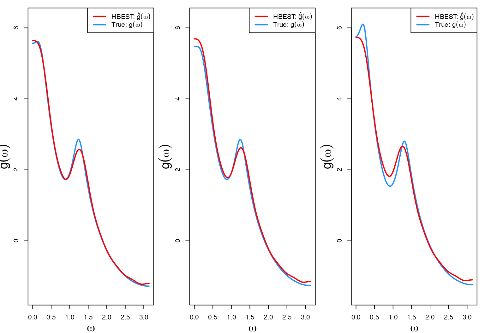
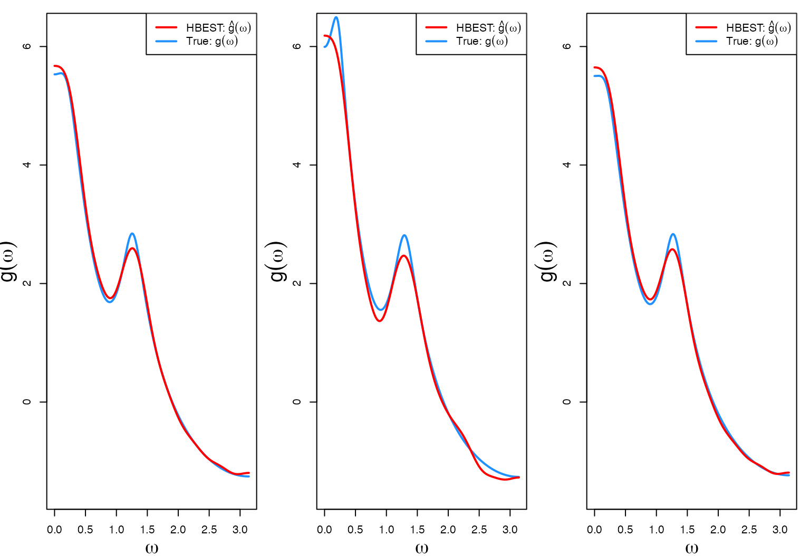
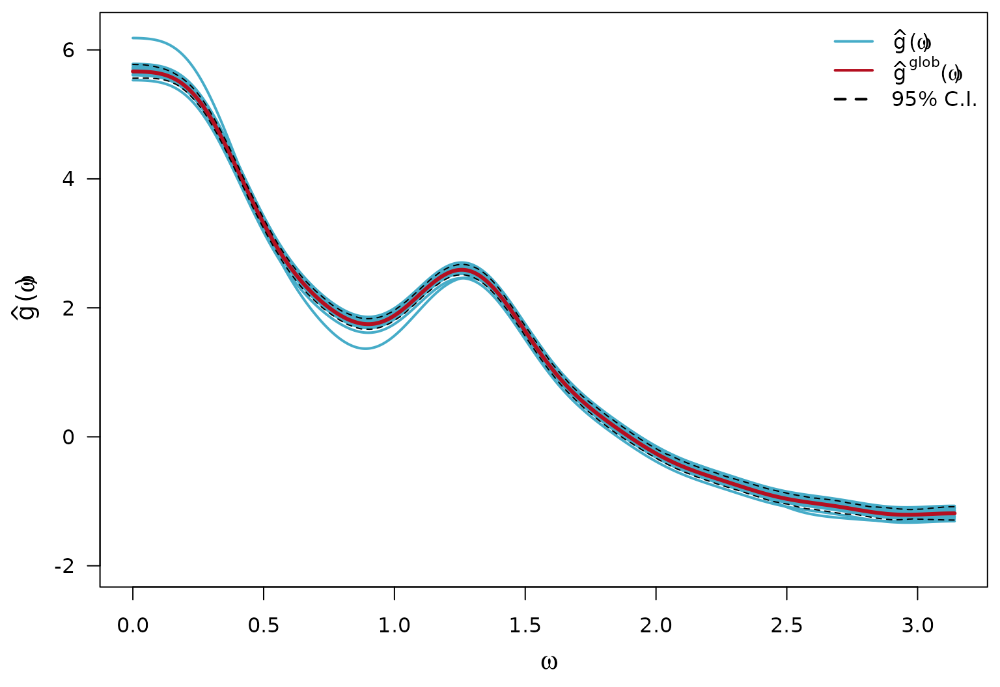
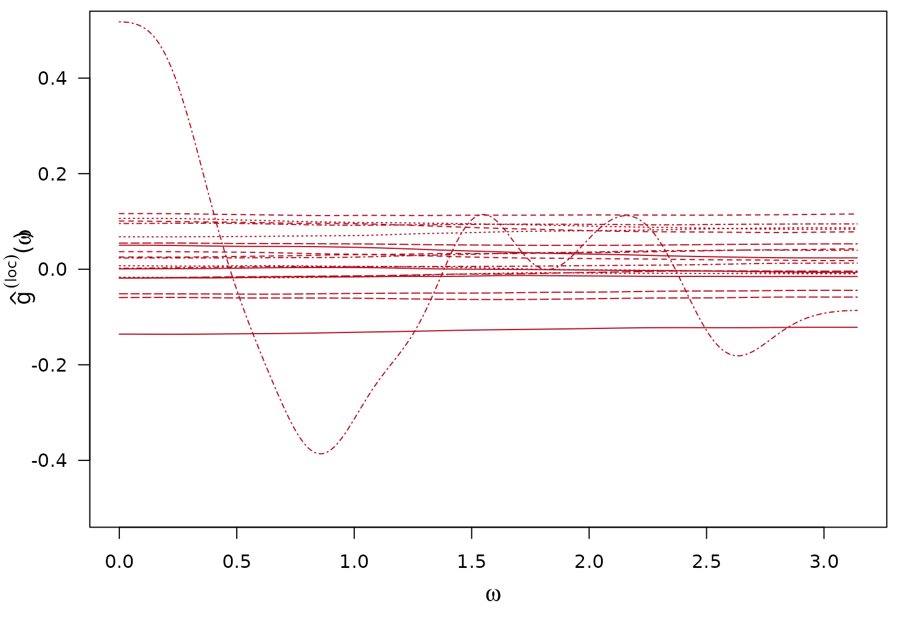
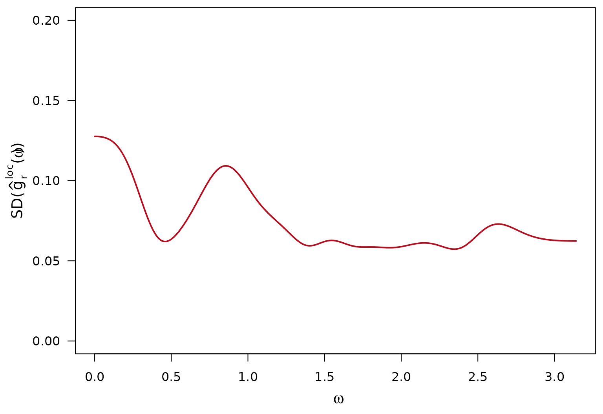
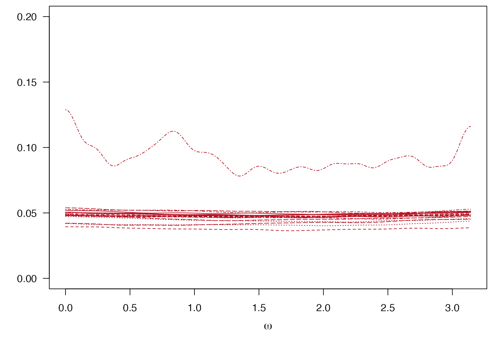
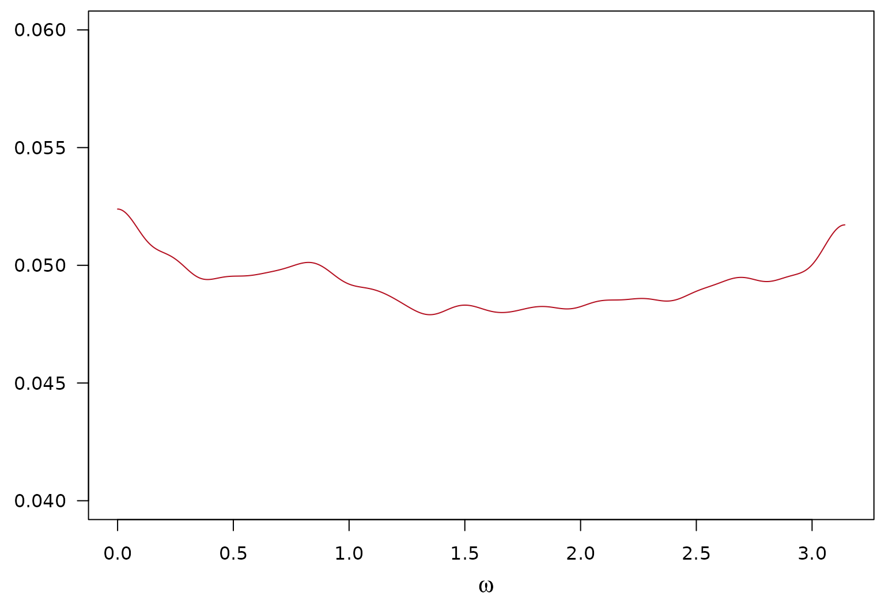
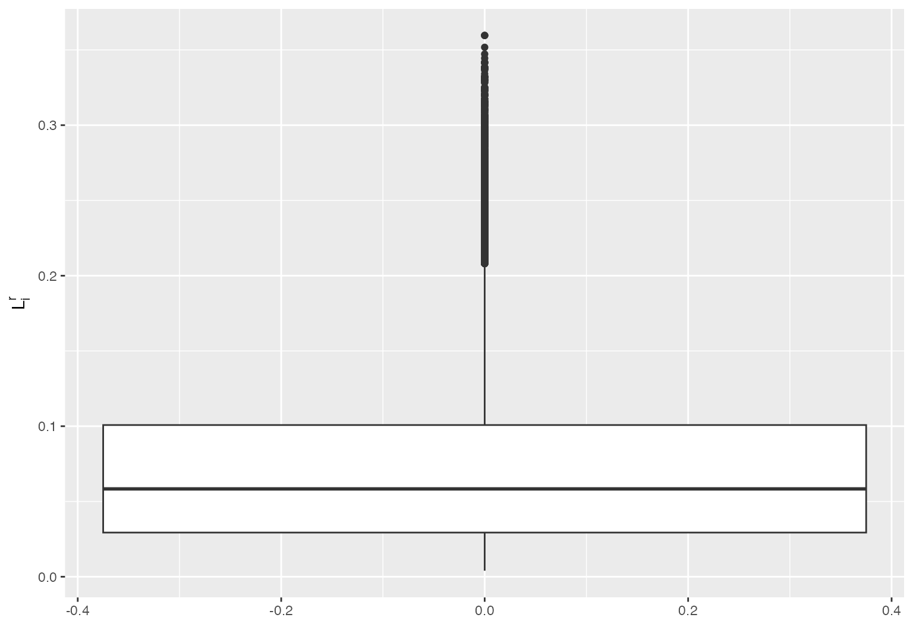

HBEST Tutorial
HBEST_tutorial.RmdIntroduction
This vignette walks through a simple tutorial on the basics of how to
use the HBEST package. The package contains a function
HBEST() which implements the sampling scheme laid out in
Lee et al. (2025). A faster version of the
HBEST() function is also available through the
HBEST_fast() function. These two functions are the main
functions of this package.
The gen_data() function is a supplemental function that
allows the user to pick a method of time-series data generation for
simulation uses.
Walkthrough of Examples
To illustrate the functionality of HBEST() we generate
time series from a few data generating processes using
gen_data() to highlight the flexibility of the model.
Generating Time-Series Data (Mixture AR(2))
Include section on how the Mixture AR(2) data is generated.
Let us generate
many conditionally independent time series. In this example we set
of the R-many time series to be of length
;
and the remaining
to be of length
.
set.seed(101)
R <- 20
# Create what percent will be "small" lengths
sm_per <- .80
lg_per <- 1 - .80
# Create the lengths for small and large
sm_length <- 600
lg_length <- 1200
n <- c(
rep(sm_length, round(sm_per * R)),
rep(lg_length, round(lg_per * R))
)
# Generate peaks and bandwidths
peaks1 <- runif(R, min = 0.2, max = 0.23)
bandwidths1 <- runif(R, min = .1, max = .2)
peaks2 <- runif(R, min = (pi * (2 / 5)) - 0.1, max = (pi * (2 / 5)) + 0.1)
bandwidths2 <- rep(0.15, R)
peaks <- rbind(peaks1, peaks2)
bandwidths <- rbind(bandwidths1, bandwidths2)
# Generate data from the AR2mix option.
out <- gen_data(
gen_method = "AR2mix",
peaks = peaks,
bandwidths = bandwidths,
n = n
)
# extract out the time-series
ts_list = out$ts_list
# extract out the phi1
phi1_true = out$phi1_true
# extract out the phi2
phi2_true = out$phi2_true
# Create storage for true SDF
full_spec = matrix(data = NA, nrow = 1000, ncol = R)
# Create a dense grid of omegas to plot over
full_omega = seq(0, pi, length.out = 1000)
# Calculate the SDF for generated data:
for(r in 1:R){
g = rep(0, length(full_omega))
for(p in 1:nrow(phi1_true)){
g = g + arma_spec(full_omega, phi = c(phi1_true[p,r], phi2_true[p,r]))
}
full_spec[,r] = g
}
# Create a blank plot
plot(x = c(), y = c(), xlim = c(0, 1200), ylim = c(-25, 25), xlab = "Time", ylab = "")
# Plot each of the raw generated time series
for (r in 1:R) {
lines(ts_list[[r]][, 1])
}Using HBEST() or HBEST_fast()
In this section we walkthrough how to use the HBEST()
function with the generated data above; how to calculate the estimate(s)
of
using the samples for
and
;
and how to calculate the estimates for
.
HBEST() and HBEST_fast() both take in the
same arguments. Either method will produce the same results, the
HBEST_fast() method has slight computational
improvements.
The arguments required to run either function are:
-
ts_listA listRlong containing the vectors of the stationary time series of potentially different lengths. -
BAn integer specifying the number of basis coefficients (not including the intercept basis coefficient. -
iterAn integer specifying the number of iterations for the MCMC algorithm embedded in this function. -
tausquaredA scalar which is used as the initial value oftausquaredthat controls the global smoothing effect. -
burninAn integer specifying the burn-in to be removed at the end of the sampling algorithm. -
zeta_minA scalar controlling the smallest value can take. So,zeta_min^2 is the smallest valuezetasquaredcan take. -
zeta_maxA scalar controlling the largest value can take. So,zeta_max^2 is the largest value thatzetasquaredcan take. -
tau_minA scalar controlling the smallest value can take. So,tau_min^2 is the smallest valuetausquaredcan take. -
tau_maxA scalar controlling the largest value can take. So,tau_max^2 is the largest valuetausquaredcan take. -
num_gptsA scalar controlling the denseness of the grid during the sampling of bothtausquaredandzetasquared. -
nu_tauA scalar indicating the degrees of freedom for the prior on . -
nu_zetaA scalar indicating the degrees of freedom for the prior on . -
sigmasquared_globA scalar… -
sigmasquared_locA scalar…
For this example, we choose the following settings for hyperparameters and initialization of .
iter = 5000
burnin = 500
B = 15
# Set/initialize hyper-parameters:
nu_tau = 2
sigmasquared_glob = 100
sigmasquared_loc = 0.1
tausquared = 10
nu_zeta = 5
# Set hyper-parameters for update on zeta and tausquared (Griddy):
zeta_min = 1.001
zeta_max = 15
tau_min = 0.001
tau_max = 100
num_gpts = 1000
results <- HBEST::HBEST(
ts_list = ts_list,
B = B,
iter = iter,
sigmasquared_glob = sigmasquared_glob,
sigmasquared_loc = sigmasquared_loc,
nu_tau = nu_tau,
tausquared = tausquared,
nu_zeta = nu_zeta,
burnin = burnin,
zeta_min = zeta_min,
zeta_max = zeta_max,
tau_min = tau_min,
tau_max = tau_max,
num_gpts = num_gpts
)Calculate Estimates of log-SDF
To construct the estimates of and :
# Construct an omega and Psi that is used for plotting.
full_Psi = outer(X = full_omega, Y = 0:B, FUN = function(x,y){sqrt(2)* cos(y * x)})
# Redefine the first column of full_Psi
full_Psi[,1] = 1
# Create storage
beta_array = array(data = NA, dim = c(iter-burnin, B+1, R))
mean_sdf = array(NA, c(length(full_omega),R))
mean_logsdf = array(NA, c(length(full_omega),R))
# Extract out the loc and glob samples
glob_samps = results$glob_samps
loc_samps = results$loc_samps
for(r in 1:R){
# Calculate beta from loc and glob
beta_array[,,r] = loc_samps[,,r] + glob_samps
# Calculate the estimate of the SDF
est_sdf = (full_Psi %*% t(beta_array[,,r]))
# Calculate posterior mean estimates of the SDF
mean_sdf[,r] = rowMeans(exp(est_sdf))
# Calculate posterior mean estimates of the log-SDF
mean_logsdf[,r] = rowMeans(est_sdf)
}The first three log-SDF estimates (red) against the true log-SDF calculated using the generated data (blue).
par(mfrow = c(1,3), bg = "white", mar = c(3.5,3.5,1,1))
for(r in 1:3){
# plot the true log-SDF
plot(x= full_omega,
y = log(full_spec[,r]),
col = "dodgerblue",
lwd = 2,
ylab = "",
xlab = "",
type = "l",
lty = 1,
ylim = c(-1.5,6.25))
# Plot the estimated log-SDF
lines(x = full_omega,
y = rowMeans((tcrossprod(full_Psi,beta_array[,,r]))),
col = "red",
lwd = 2,
ylab = "",
xlab = "",
type = "l",
lty = 1)
legend("topright", legend = c(bquote("HBEST: "*hat(g)(omega)), bquote("True: "*g(omega))),
col = c("red", "dodgerblue"),
lwd = 2)
mtext(side = 1,
text = bquote(omega),
line = 2.5,
cex = 1.2)
mtext(side = 2,
text = bquote(g(omega)),
line = 2,
cex = 1.2)
}
The last three log-SDF estimates (red) against the true log-SDF calculated using the generated data (blue). The code is similar to the code in the previous section.

Calculate Estimates of the global log-SDF components
par(mfrow = c(1,1), bg = "white", mar = c(4,4,.5,.5))
# Create empty plot
plot(x = c(), y = c(),
ylim = c(-2,6.25),
xlim = c(0,pi),
main = "",
ylab = "",
xlab = "",
las = 1)
mtext(side = 2,
text = bquote(hat(g)*"("*omega*")"),
line = 2.25,
cex = 1.2)
mtext(side = 1,
text = bquote(omega),
line = 2.5,
cex = 1.2)
text(x = 0, y = par("usr")[4]-0.1*diff(par("usr")[3:4]),
labels = "", pos = 4, cex = 1.5)
matlines(x = full_omega,
y = mean_logsdf,
col = wesanderson::wes_palette("FantasticFox1")[3],
lty = 1,
lwd = 2)
lines(x = full_omega,
y = rowMeans(tcrossprod(full_Psi, glob_samps)),
col = wesanderson::wes_palette("FantasticFox1")[5],
lwd = 3)
# point-wise credible interval of global log-SDF component
lines(x = full_omega,
y = apply(tcrossprod(full_Psi, glob_samps),
1,
FUN = function(x){quantile(x, 0.025)}),
col = "black",
lwd = 1,
lty = 2)
lines(x = full_omega,
y = apply(tcrossprod(full_Psi, glob_samps),
1,
FUN = function(x){quantile(x, 0.975)}),
col = "black",
lwd = 1,
lty = 2)
legend("topright",
legend = c(bquote(hat(g)*"("*omega*")"),
bquote(hat(g)^"glob"*"("*omega*")"), "95% C.I."),
col = c(wesanderson::wes_palette("FantasticFox1")[3],
wesanderson::wes_palette("FantasticFox1")[5],
"black"),
lty = c(1,1,2),
bg = "white",
lwd = 2,
bty = "n")
Calculate Estimates of the local log-SDF components and Calculations of Interest
Posterior mean (over iterations) of local log-SDF components
# calculate beta^local from beta and glob
# create object to store beta^local values:
loc_array = array(NA, dim(beta_array))
# Create storage for the standard deviation calculation:
sd_loc = array(NA, c(length(full_omega), R))
for(r in 1:R){
loc_array[,,r] = beta_array[,,r] - glob_samps
# calculate the estimated local component
sd_loc[,r] = apply(tcrossprod(full_Psi, loc_array[,,r]), 1, sd)
}For simplicity of notation, the th iteration of the estimate: is written as in the sections that follow
$$ h_i^{(r)}(\omega) = \pmb{\psi}(\omega)^T \pmb{e}_i^{(r)}\\ $$
$$ \bar{h}^{(r)}(\omega)= \frac{1}{I} \sum_{i=1}^{I} h_i^{(r)}(\omega) = \frac{1}{I} \sum_{i=1}^{I} \pmb{\psi}(\omega)^T \pmb{e}_i^{(r)} = \pmb{\psi}(\omega)^T \left(\frac{1}{I} \sum_{i=1}^{I} \pmb{e}_i^{(r)}\right) = \pmb{\psi}(\omega)^T \bar{\pmb{e}}^{(r)}\\ $$
# Calculate the spectral density only using beta^loc_{rb}
par(mfrow = c(1,1), bg = "white", mar = c(4,4,.5,.5))
plot(x = c(), y = c(),
ylim = c(-0.5,0.5),
xlim = c(0,pi),
main = "",
ylab = "",
xlab = "",
las = 1)
mtext(side = 2,
text = bquote(hat(g)^(loc)*"("*omega*")"),
line = 2.25,
cex = 1.2)
mtext(side = 1,
text = bquote(omega),
line = 2.5,
cex = 1.2)
matlines(x = full_omega,
y = full_Psi %*% apply(loc_array, c(2,3), mean),
col = wesanderson::wes_palette("FantasticFox1")[5],
lwd = 1)
Per Frequency Replicate Variability of the local log-SDF
$$ h_i^{(r)}(\omega) = \pmb{\psi}(\omega)^T \pmb{e}_i^{(r)}\\ $$
$$ \bar{h}^{(r)}(\omega)= \frac{1}{I} \sum_{i=1}^{I} h_i^{(r)}(\omega) = \frac{1}{I} \sum_{i=1}^{I} \pmb{\psi}(\omega)^T \pmb{e}_i^{(r)} = \pmb{\psi}(\omega)^T \left(\frac{1}{I} \sum_{i=1}^{I} \pmb{e}_i^{(r)}\right) = \pmb{\psi}(\omega)^T \bar{\pmb{e}}^{(r)}\\ $$
Sample standard deviation is over the replicates
par(mfrow = c(1,1), bg = "white", mar = c(4,5,.5,.5))
plot(x = c(), y = c(),
ylim = c(0,0.2),
xlim = c(0,pi),
main = "",
ylab = "",
xlab = "",
las = 1)
mtext(side = 2,
text = bquote("SD("*hat(g)[r]^"loc"*"("*omega*"))"),
line = 3,
cex = 1.2)
mtext(side = 1,
text = bquote(omega),
line = 2.5,
cex = 1.2)
matlines(x = full_omega,
y = apply((full_Psi %*% apply(loc_array, c(2,3), mean)),
1,
sd),
col = wesanderson::wes_palette("FantasticFox1")[5],
lwd = 2)
Posterior SD of Estimated Local Component of the log-SDF
Sample standard deviation is over the iterations.
$$ h^{(r)}(\omega) = \pmb{\psi}(\omega)^T \pmb{e}^{(r)}\\ $$
$$ \text{Var}(h^{(r)}(\omega)\mid -) = \text{Var}(\pmb{\psi}(\omega)^T \pmb{e}^{(r)} \mid -)\\ $$
$$ S^{(r)}(\omega) = \sqrt{\text{Var}(h^{(r)}(\omega)\mid -)}\\ $$
par(mfrow = c(1,1), bg = "white", mar = c(4,4,.5,.5))
plot(x = c(), y = c(),
ylim = c(0,0.2),
xlim = c(0,pi),
main = "",
ylab = "",
xlab = "",
las = 1)
mtext(side = 2,
text = "",
line = 2.25,
cex = 1.2)
mtext(side = 1,
text = bquote(omega),
line = 2.5,
cex = 1.2)
matlines(x = full_omega,
y = sd_loc,
col = wesanderson::wes_palette("FantasticFox1")[5],
lwd = 1)
Avgerage Posterior SD of Estimated Local Component of the log-SDF
par(mfrow = c(1,1), bg = "white", mar = c(4,4,.5,.5))
plot(x = c(), y = c(),
ylim = c(0.04,0.06),
xlim = c(0,pi),
main = "",
ylab = "",
xlab = "",
las = 1)
mtext(side = 2,
text = "",
line = 2.25,
cex = 1.2)
mtext(side = 1,
text = bquote(omega),
line = 2.5,
cex = 1.2)
lines(x = full_omega,
y = rowMeans(sd_loc),
col = wesanderson::wes_palette("FantasticFox1")[5],
lwd = 1)
Average L2 norm of local log-SDF component
For each iteration calculating what the L2 norm of the piece is.
g_hat2 = function(omega, e){
# omega is a single omega to evaluate over
# b is a vector of b's
# create psi:
psi = outer(X = omega, Y = 0:(length(e)-1), FUN = function(x,y){sqrt(2)* cos(y * x)})
psi[,1] = 1
# calculate f(\omega):
g = (psi %*% e)^2
return(g)
}
locnorm_hat = apply(loc_array , c(1,3), FUN = function(e){integrate(g_hat2, lower = 0, upper = 2*pi, e = e)$value / (2*pi)})
library(ggplot2)
#> Warning: package 'ggplot2' was built under R version 4.5.2
df = data.frame("L" = c(sqrt(locnorm_hat)))
ggplot2::ggplot(data = df, aes(y = L))+
ggplot2::geom_boxplot()+
ggplot2::ylab(bquote(L[i]^r))